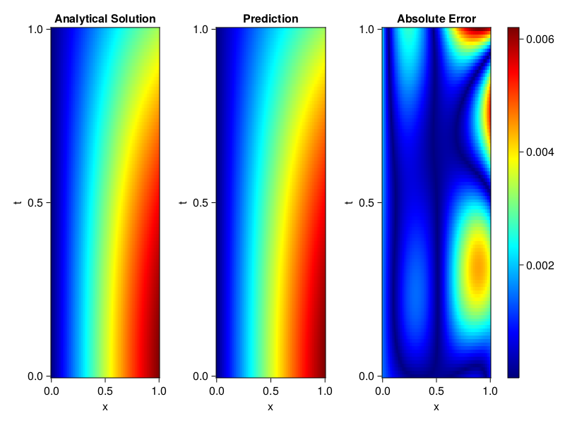
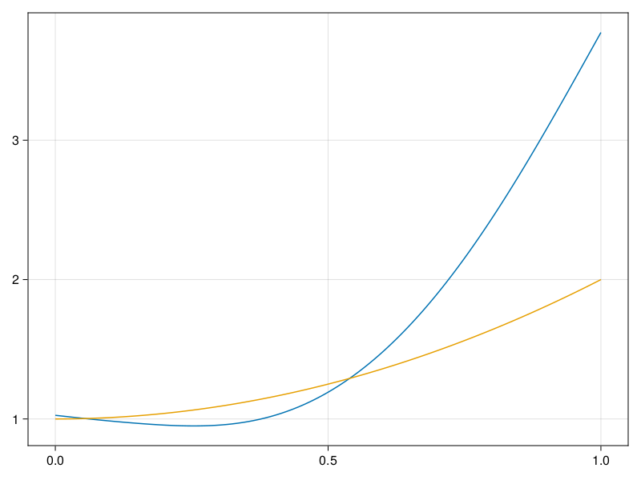

Inverse problem for the wave equation with unknown velocity field
We are going to sovle the wave equation.
using Sophon, ModelingToolkit, IntervalSets
using Optimization, OptimizationOptimJL
@parameters x, t
@variables u(..), c(..)
Dₜ = Differential(t)
Dₜ² = Differential(t)^2
Dₓ² = Differential(x)^2
s(x,t) = abs2(x) * sin(x) * cos(t)
eq = Dₜ²(u(x,t)) ~ c(x) * Dₓ²(u(x,t)) + s(x,t)
bcs = [u(x, 0) ~ sin(x),
Dₜ(u(x, 0)) ~ 0,
u(0, t) ~ 0,
u(1, t) ~ sin(1) * cos(t)]
domains = [t ∈ Interval(0.0, 1.0),
x ∈ Interval(0.0, 1.0)]
@named wave = PDESystem(eq, bcs, domains, [t,x], [u(x,t),c(x)])\[ \begin{align} \frac{\mathrm{d}}{\mathrm{d}t} \frac{\mathrm{d}}{\mathrm{d}t} u\left( x, t \right) =& c\left( x \right) \frac{\mathrm{d}}{\mathrm{d}x} \frac{\mathrm{d}}{\mathrm{d}x} u\left( x, t \right) + \cos\left( t \right) \left|x\right|^{2} \sin\left( x \right) \end{align} \]
Here the velocity field $c(x)$ is unknown, we will approximate it with a neural network.
pinn = PINN(u = FullyConnected((2,16,16,16,1), sin),
c = FullyConnected((1,16,16,1), tanh))
sampler = QuasiRandomSampler(500,100)
strategy = NonAdaptiveTraining(1, (10,10,1,1))NonAdaptiveTraining{Int64, NTuple{4, Int64}}(1, (10, 10, 1, 1))Next we generate some data of $u(x,t)$. Here we place two sensors at $x=0.1$ and $x=0.5$.
ū(x,t) = sin(x) * cos(t)
x_data = hcat(fill(0.1, 1, 50), fill(0.5, 1, 50))
t_data = repeat(range(0.0, 1.0, length = 50),2)'
input_data = [x_data; t_data]
u_data = ū.(x_data, t_data)1×100 Matrix{Float64}:
0.0998334 0.0998126 0.0997503 0.0996464 … 0.275281 0.267213 0.259035Finally we construct the inverse problem and solve it.
additional_loss(phi, θ) = sum(abs2, phi.u(input_data, θ.u) .- u_data)
prob = Sophon.discretize(wave, pinn, sampler, strategy; additional_loss=additional_loss)
@time res = Optimization.solve(prob, BFGS(), maxiters=1000)u: ComponentVector{Float64}(u = (layer_1 = (weight = [-0.19700354263231215 -1.0569868188095775; 0.5662883969096254 -0.23922507177166405; … ; -0.869928261161854 1.51369692354552; 1.1380918164761267 -0.6536632190556331], bias = [-0.06460858614599939; 0.0474707241584323; … ; -0.32343407637177607; 0.14566778673874792;;]), layer_2 = (weight = [-0.2731693285918117 -0.34207756143027107 … -0.17349101937812364 0.3706905919687763; -0.405388082158147 0.42040835325545833 … -0.2672446606320126 -0.2956860200573323; … ; -0.46039652444916285 -0.04836131886060235 … -0.49864474000240144 0.2666390471330676; -0.2359661956954437 0.5898513476084423 … -0.2492281547547071 -0.44115897781743973], bias = [0.07069832227125526; 0.08087437145027654; … ; 0.0824340924241157; -0.02035451874484797;;]), layer_3 = (weight = [0.06299339455323508 0.2972830750396164 … -0.05758145478940563 -0.44180374978174414; -0.35166024351383557 -0.4886289525758653 … 0.2871308284803626 0.17751084787138252; … ; -0.2505473343888033 0.45245131991573 … 0.07364183369096561 0.31207250666886394; 0.2708270472363918 0.4459109608207555 … 0.48875899637702575 -0.1927448889546539], bias = [0.3521748868762696; -0.09538266714709526; … ; 0.028986843378525272; -0.07148993692351431;;]), layer_4 = (weight = [-0.1842103584795927 -0.027797920815233707 … 0.5260013319765015 -0.4683198294550685], bias = [0.06325736950082411;;])), c = (layer_1 = (weight = [-1.6204616711153903; 2.2730875306704306; … ; -2.0020675187813297; -2.2607393051085936;;], bias = [-0.25780765822172125; 0.3148994686935943; … ; 0.025169025999980013; -0.19870157337775177;;]), layer_2 = (weight = [-0.12843063889422582 0.2127223594328641 … 0.772426381510688 0.6331302626092868; -0.2739889794522803 0.44957931909356896 … -0.4991183653841401 0.24181467717885813; … ; -0.42302580180251076 -0.04607618466582259 … 0.468349066908708 0.7106596799174887; 0.6136684708739769 -0.4574187367263836 … -0.47514975903795337 0.1166922291056935], bias = [0.07772865342310933; 0.07984102343621527; … ; 0.02850079477518477; 0.07785941645341568;;]), layer_3 = (weight = [1.3179277609105056 0.9508201958300303 … 0.04639733291568085 0.5378061201294776], bias = [0.742405886452885;;])))Let's visualize the predictted solution and inferred velocity
using CairoMakie
ts = range(0, 1; length=100)
xs = range(0, 1; length=100)
u_pred = [pinn.phi.u([x, t], res.u.u)[1] for x in xs, t in ts]
c_pred = [pinn.phi.c([x], res.u.c)[1] for x in xs]
u_true = [ū(x, t) for x in xs, t in ts]
c_true = 1 .+ abs2.(xs) |> vec
axis = (xlabel="x", ylabel="t", title="Analytical Solution")
fig, ax1, hm1 = heatmap(xs, ts, u_true, axis=axis; colormap=:jet)
ax2, hm2= heatmap(fig[1, end+1], xs, ts, u_pred, axis= merge(axis, (;title = "Prediction")); colormap=:jet)
ax3, hm3 = heatmap(fig[1, end+1], xs, ts, abs.(u_true .- u_pred), axis= merge(axis, (;title = "Absolute Error")); colormap=:jet)
Colorbar(fig[:, end+1], hm3)
fig
fig, ax = lines(xs, c_pred)
lines!(ax, xs, c_true)
fig